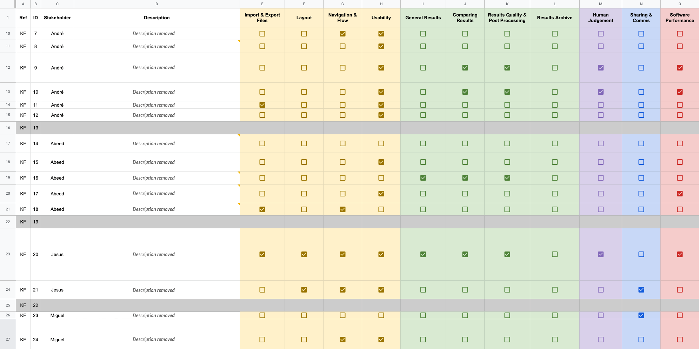
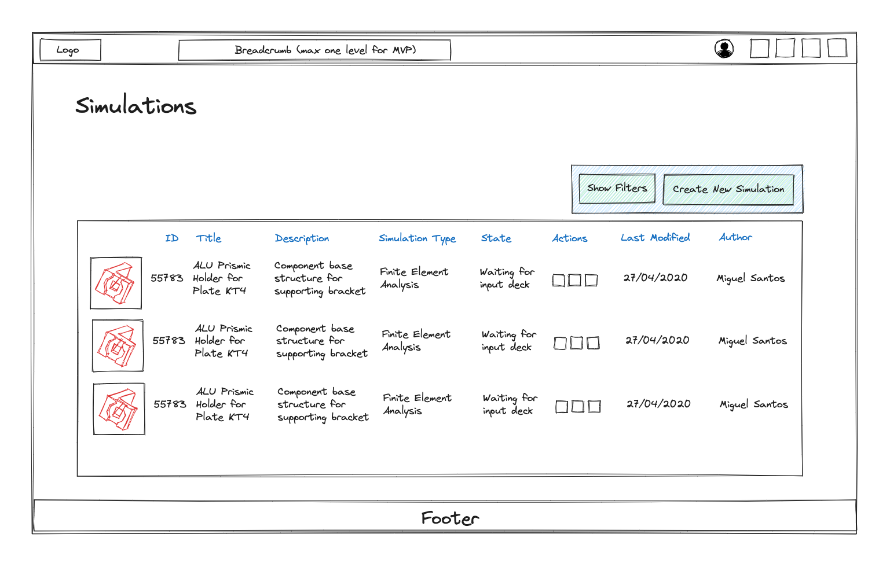
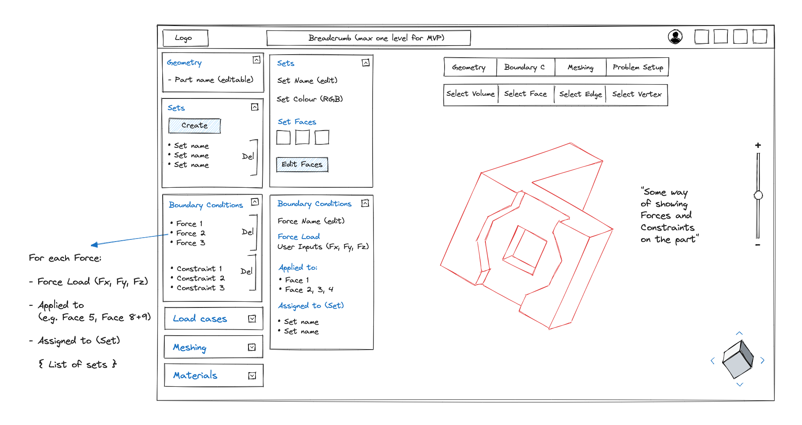
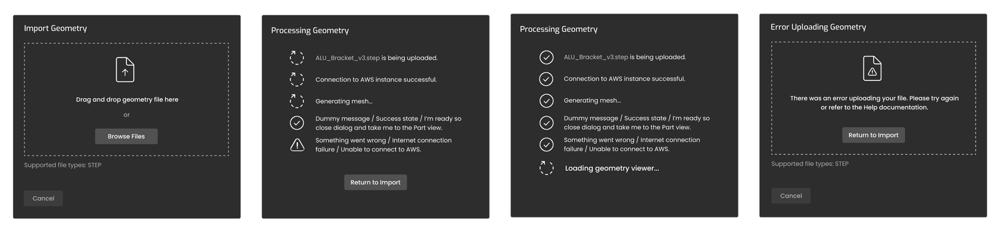
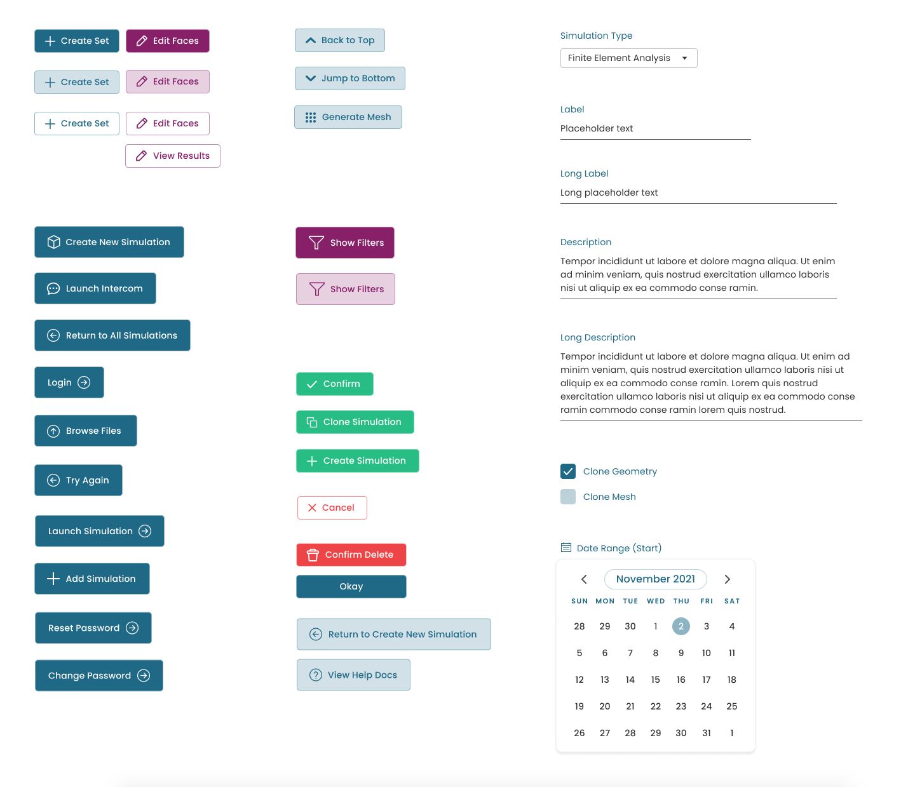
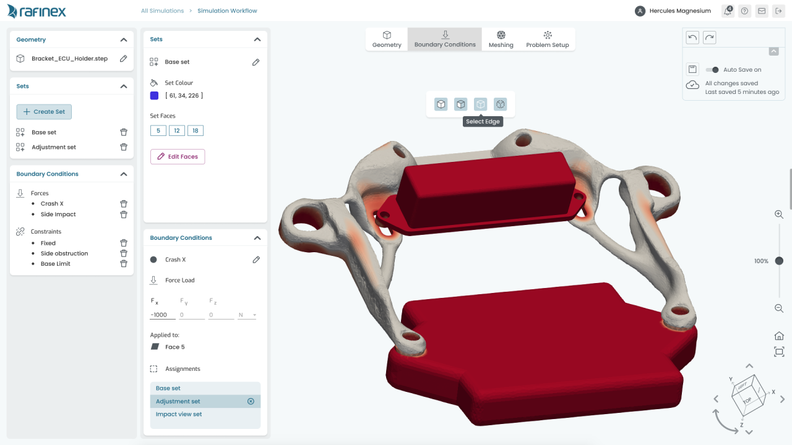

Context
Möbius is a topology optimisation platform used to design high-performance engineering components. It combines simulation, material constraints, and optimisation algorithms to generate manufacturable geometries.
I joined Rafinex to help evolve an early proof-of-concept into a production-ready product, working across UX, UI, design systems, and frontend implementation.
My role
Led product design across the platform, focusing on structuring complex simulation workflows into usable interfaces. Worked closely with engineering and stakeholders to define interaction patterns, visual language, and implementation-ready outputs.
Outcome
- Helped evolve an early proof-of-concept into a more structured, production-ready product experience.
- Simplified key simulation workflows for expert users working in a highly technical environment.
- Established reusable UI patterns and system foundations to support more consistent implementation.
Approach
The core challenge was designing for a highly technical domain. Existing FEA tools are functionally rich but often difficult to use, with poor discoverability and outdated interaction patterns.
I analysed comparable tools and worked closely with stakeholders to understand workflows, constraints, and user expectations. This included hands-on exploration of simulation tools and reviewing technical documentation to inform design decisions.
The goal was to create a system that balanced technical depth with clarity — enabling engineers to move quickly without sacrificing control.

© Rafinex SARL – UX Study – Discovery and research.
Structuring complex workflows
Worked from early technical schemas to define interface structure, including panels, controls, and interaction flows. Began with low-fidelity wireframes to explore layout and information hierarchy before progressing to high-fidelity prototypes.
- Introduced a table-based structure for simulation management to handle large datasets and filtering.
- Designed modular panels and dialogs to support step-based workflows.
- Used prototyping to validate interaction patterns before implementation.

© Rafinex SARL – Simulations overview.

© Rafinex SARL – Design optimisation panel.
Interaction design
Designed workflows to prioritise speed and efficiency, recognising that engineers perform repetitive tasks under time pressure.
- Designed drag-and-drop workflows for geometry import.
- Provided fallback interactions for flexibility.
- Optimised navigation between simulation steps for rapid iteration.

© Rafinex SARL – Geometry import workflow.
UI design and design system
Established a consistent visual language across the product, including colour, typography, layout, and component behaviour.
- Defined colour systems including semantic states (information, success, warning, error).
- Applied an 8px grid to improve layout consistency and readability.
- Ensured implementation consistency through clear component definitions.

© Rafinex SARL – Component system.
Interface design
Designed the main workflow interface to prioritise the 3D model view while maintaining access to controls and configuration panels.
- Structured controls within compact, scrollable panels.
- Used contextual menus to expose relevant controls.
- Balanced information density with readability.

© Rafinex SARL – Simulation workflow interface.
Frontend implementation
Developed reusable UI components and templates, working closely with engineering to ensure alignment between design and implementation.
- Built modular components using BEM naming conventions.
- Implemented forms, tables, modals, and workflow controls.
- Supported translation of design into production-ready code.
“Möbius is repeatedly being commended for its intuitive and ergonomic user-centricity by professional-level CAE engineers.”
– André A.R. Wilmes, PhD. CEO – Rafinex SARL
Closing
This work focused on making complex simulation workflows usable without reducing their technical depth. The emphasis was on structuring interaction patterns, improving clarity, and supporting efficient workflows within a specialised domain.
Further information
Further information about Rafinex can be found on the following channels: website, YouTube channel, and LinkedIn.